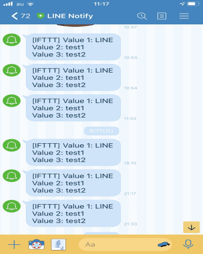

Ｍ5stackが手に入ったので早速使ってみました。 Arduinoと違ってWiFiに接続できることができる。それを活かしてLineに通知が行くような仕組みを作った。 その方法としてIFTTT（イフト）というサービスを使った。これは異なるソーシャルメディアを連携させることが出来るサービスです。 今回はLineと接続したがTwitterやInstagram、YouTubeとも接続できる。
- #include <M5Stack.h>
- #include <WiFi.h>
- #include <WiFiClient.h>
-
- const char* ssid = "WiFiのSSID";
- const char* password = "WiFiのパスワード";
-
- String makerEvent = "push_line"; // Maker Webhooks
- String makerKey = "IFTTTと接続したときに表示されるパスワード"; // Maker Webhooks
-
- const char* server = "maker.ifttt.com"; // Server URL
- WiFiClient client;
-
- bool checkWifiConnected() {
- // attempt to connect to Wifi network:
- while (WiFi.status() != WL_CONNECTED) {
- Serial.print(".");
- // wait 1 second for re-trying
- delay(1000);
- }
-
- Serial.print("Connected to ");
- Serial.println(ssid);
- return true;
- }
-
- void send(String value1, String value2, String value3) {
- while (!checkWifiConnected()) {
- Serial.print("Attempting to connect to WiFi");
- WiFi.begin(ssid, password);
- }
-
- Serial.println("\nStarting connection to server...");
- if (!client.connect(server, 80)) {
- Serial.println("Connection failed!");
- } else {
- Serial.println("Connected to server!");
- // Make a HTTP request:
- String url = "/trigger/" + makerEvent + "/with/key/" + makerKey;
- url += "?value1=" + value1 + "&value2=" + value2 + "&value3=" + value3;
- client.println("GET " + url + " HTTP/1.1");
- client.print("Host: ");
- client.println(server);
- client.println("Connection: close");
- client.println();
- Serial.print("Waiting for response "); //WiFiClientSecure uses a non blocking implementation
-
- int count = 0;
- while (!client.available()) {
- delay(50); //
- Serial.print(".");
- }
- // if there are incoming bytes available
- // from the server, read them and print them:
- while (client.available()) {
- char c = client.read();
- Serial.write(c);
- }
-
- // if the server's disconnected, stop the client:
- if (!client.connected()) {
- Serial.println();
- Serial.println("disconnecting from server.");
- client.stop();
- }
- }
- }
-
- void setup() {
- //Initialize serial and wait for port to open:
- Serial.begin(115200);
- delay(100);
-
- WiFi.begin(ssid, password);
- while (!checkWifiConnected()) {
- WiFi.begin(ssid, password);
- }
- }
-
- void loop() {
- M5.update();
- if (M5.BtnA.wasReleased()) {
- send("LINE","test1","test2"); //任意の文字列3つ
- M5.Lcd.println("send");
- }
- delay(20);
- }
M5stackのボタンを押すと下のような通知が行きます。
これでボタンを押すことでLineに通知が行くようになった。 今後、水耕栽培と連携させる案としては指定した範囲外の水温になった場合に水を取り換える通知を送る、気温を知らせるなどを考えた。
参考にしたサイト